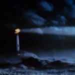
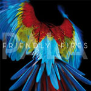

Top 50 Albums of 2011 (Part One)
By No Ripcord Staff
 50. Rustie
50. Rustie
 36. Iron & Wine
36. Iron & Wine
 28. Bill Wells & Aidan Moffat
28. Bill Wells & Aidan Moffat
At the time of writing, the good people of No Ripcord have reviewed a quite staggering 389 different records this year. The more astute of you will have worked out that it's a rate of productivity that equates to more than one review a day - something we're all very proud of here at NR Towers.
That's all very well, you might think, but what are the best ones? Well, our crack team of writers have been sent away to write and re-write their own personal best-of lists. These were then fed through a super-computer using algorithms of such complexity rarely seen since the end of World War II. After hours of spluttering, sparks and steam, this is the list the super-computer churned out for us. So, read, digest, enjoy, agree, disagree, tell your friends - this is the definitive list of what's been happening over the past twelve months.
For numbers 25-1, click here.
50. Rustie"Glass Swords"
(Warp Records)
Hyperactivity in music, as in life, can get on people's nerves. Glass Swords is a record that is overflowing with ideas and rarely executes them for more than a few seconds, never fully locking into a groove or allowing the listener to grow complacent. Amalgamating influences as far-flung as Dirty South hip-hop, diva house, peak-time 00s trance, Navi from The Legend of Zelda and G-funk bass, all heavily-treated with all manner of pitch-shifting and warping effects and coated with a slather of 8-bit squiggles, the record is a grin-inducing sugar rush from start to finish. Standout cut, Ultra Thizz, in particular is a dancefloor destroyer, clearing all in its path with synth stabs that sound like cans of paint exploding, underpinned by rolling drum fills. While admittedly not for everyone, if you're looking for an original, innovative and immensely fun slab of electronic music, you'll find it here. (Gabriel Szatan)
49. Laura Marling
"A Creature I Don't Know"
(Virgin)
Singer-songwriter Laura Marling is fast turning into a national treasure in the UK. Her comparatively short career has seen three beautiful and critically-acclaimed albums (two of which have been certified gold in the UK) and two nominations for the Mercury prize, which could easily become three when next year's list is published (A Creature I Don't Know was released after the 2011 awards took place). It's hard to believe she's still only 21 years of age. Marling's third album, A Creature I Don't Know, is a blend of expertly-crafted, country-tinged folk songs and retains the intimacy of her first two releases whilst being noticeably more ambitious. Perhaps it's this extra ambition that has led our writers to make A Creature I Don't Know the first of Marling's albums to appear on a No Ripcord Top 50 year-end list. I doubt it will be the last of her albums to do so. (Craig Stevens)
48. Tyler, The Creator
"Goblin"
(XL)
Few artists in recent history have sparked the public consciousness like Tyler, The Creator and his band of masked menaces, Odd Future Wolf Gang Kill Them All. Goblin is Tyler's follow-up to 2009’s criminally underrated Bastard. However, unlike the fist-pumping juvenilia of his debut, Goblin finds Tyler tackling his demons head on. The record is an unpunctuated and sprawling labyrinth; monolithically dark from its hopeful start, all the way to the final murderous showdown. Goblin takes you headfirst into the solipsistic nightmare of Tyler’s life. It’s an album of contrast: hopes and dreams turn into doubts and fears as fast as Tyler spits his lyrics. It isn’t always easy to consume, but the naked, hypnotic beauty of the soundscapes Tyler has created overshadows the disturbing lyrics. Whether or not you are with 'em or against 'em, Tyler and his Wolf Gang have left an indelible mark on the contemporary hip-hop scene. (Lukas Clark-Memler)
47. John Maus
"We Must Become The Pitiless Censors Of Ourselves"
(Domino)
The philosophy teacher and musician John Maus has mentioned in interviews that the only way to confront the power of capitalism is through music and the only music that can confront it is pop. Like the biblical Abraham, Maus has a knife held to the throat of his latest album, We Must Become The Pitiless Censors Of Ourselves, and is taking his Kierkegaardian leap-of-faith, waiting for God's call to put the knife down. Now at the end of 2011, God has called him in the form of thousands of listeners and new enthusiasts – who may not agree with or understand his philosophies – but can at least accept that these new eleven songs are Maus at his most accessible. In the year of the Occupy, Maus' "hysterical body" – a term he uses to describe his persona during live performances – just might be the most comparable body to that of the protesters at Occupy Wall Street, and moreover, to what we attach to our bodies to make them cyborgs: our iPhones that help us tweet, our video cameras that capture police officers pepper spraying innocent protesters, our laptops that let us log into our dual identity on Facebook (where we can "often start over," in the words of poet Michael Gizzi). It is this constant logging in and out of our lives in the Age of Mechanical Reproduction that Maus sings against. Pitiless Censors is Maus still singing, even under the forces of power that control his life, and likewise, all of ours, too. Only faith in pop can set us free. (Michael Iovino)
46. Zomby
"Dedication"
(4AD)
If there’s one album this year that embodies the magpie spirit of modern dance and electronica, it’s Zomby’s Dedication. It’s a rampant trawl through the last 20 years of dance music styles. Some tracks would not seem out of place on an early 90s ‘intelligent techno’ compilation alongside Aphex Twin, while others, such as key track, Natalia’s Song, offer a clear nod to contemporary dubstep and in particular, Burial’s use of disembodied vocal samples. Unlike Burial though, Zomby’s anonymity serves to give this music a certain clinicality, as if his facelessness (in media terms) stands in for the timelessness (or rather, the atemporality) of the music. This may eventually be his downfall but for now, Dedication is an addictive listening experience. (David Wood)
45. Foo Fighters
"Wasting Light"
(Columbia)
Foo Fighters have had ups and downs, and Wasting Light is certainly the former. Dave Grohl displays the oddest (and most personally respected) balls in rock on the band’s seventh record. They’re not the balls-out cock-rock type of the ‘80s and they’re not the faux-Nazi shock balls of Marilyn Manson’s better days, but the balls it takes for a rock ‘n’ roll artist to strip themselves raw and show genuine emotion. There are tunes of death and sadness and a fairly upfront address to the late Cobain, and that takes power. The band as a whole though, is not to be overlooked as they push out some of their most grinding, powerful, dirty and grabbing songs in years. It’s high time the Fighters get applause once again. (Luredo Marbery)
44. Beirut
"The Rip Tide"
(Pompeii)
Beirut’s unorthodox yet sublime mix of mariachi and Baltic textures drifts toward the mainstream on The Rip Tide. Don’t be put off though - the accessibility doesn’t mitigate the musicality. Bellowing horns, rapping snare drum, and infectious waltz rhythms still converge in confluent fashion. Frontman Zach Condon still croons in the warbly baritone that colored Gulag Orkestar and The Flying Club Cup. And his artistic vision, the defining, most important element of Beirut, is still fresh and focused. Whether through the bubblegum-pop synthesizer in Santa Fe or the horn-driven waltz rhythm in Port of Call, The Rip Tide’s arrangements arrive at the same satisfying, emotive realm that first commanded an audience. (Ben Jones)
43. Jay-Z & Kanye West
"Watch the Throne"
(Mercury)
Kanye West is one of the greatest hip-hop artists of our time. As much as his detractors refuse to admit it, he’s kind of justified in having an ego about his music. Jay-Z paved the way for that artistic expression and has one of the best flows in modern rap. He knows how to write his words and even more how to spit them. So, needless to say, Watch the Throne is an ego-filled trip through diamonds and gold that no other single rapper or group has matched this year. But, below the surface of a gloated lifestyle is exposed the true nature of a human being and the stars’ own regrets and personal trappings. Maybe they don’t love it as much as they want to. Maybe there’s something more that they’d give it all up for. Maybe those glimmers in their eyes aren’t for cars but tears about the truth. See what you want in the record, but Jay and ‘Ye are the undisputed Kings of Rap in the radio society of normally no-brained douchebag pop. Give ‘em their throne, they deserve it. (Luredo Marbery)
42. Smith Westerns
"Dye It Blonde"
(Mercury)
Young bands writing catchy ditties around the three-minute mark were in short supply this year, which makes it all the more baffling why Smith Westerns have been largely overlooked. Pitching at a middle ground somewhere between T.Rex and Suede - bouncy and melodic with hooks flying left, right and centre - the glam schtick could wear thin were it not for the astoundingly well-written songs found within. The verses are just as memorable as the choruses and the musicianship, while technically unremarkable, is solid and hits all the right spots, as with the killer riff at the end of Imagine, Pt.3. Taken as a whole you'd be hard-pressed to find a better collection of straight-up indie pop songs anywhere this year - a near-perfect package, bursting at the seams with enthusiasm and energy. (Gabriel Szatan)
41. Tennis
"Cape Dory"
(Fat Possum)
Click here for our original review
Sometime in 2008, Alaina Moore and Patrick Riley set off on a sailing expedition that would eventually last seven months and see them navigate the Eastern Atlantic Seaboard. It also saw them get married, form Tennis and write their debut album, Cape Dory, which tells of their DIY nautical adventure. Sweet melodies driven by the catchiest of surf pop hooks, Cape Dory is an utterly charming record that confounds expectations about its apparent novelty with every track. Quaint, joyous and above all, filled with great songs. (Joe Gastineau)
40. Washed Out
"Within And Without"
(Weird World)
Advance word on Within And Without suggested it would be an impenetrably arch experience – if it wasn't enough that chillwave as a movement seemingly consists of hipsters reviving the most tasteless sounds of the 80s and not even bothering to record them properly, there was also Washed Out's Ernest Greene droning on about why the humble cassette is his favoured method of musical distribution. Incredibly though, all that playing about with tapes has actually resulted in an album that sounds completely organic and alive. While the naysayers (including No Ripcord's own Andrew Baer) were correct when they said that it's all a bit samey, in fact its uniformity is actually one of its strengths. Designed to be taken as a whole, its summertime haze of lush atmospherics washes over the listener to reveal a surprisingly strong melodic core, invoking memories of songs that never existed in the first place. (Mark Davison)
39. Friendly Fires
"Pala"
(XL)
Like the 80s pop which influenced it, Pala isn’t afraid of throwing bold, colourful shapes. Packed with pop hooks, new romantic posturing and syrupy funk, it was one of the better party records of 2011. The songs are confident and assured - Live Those Days Tonight harks back to the early house explosion and Hurting is the best Wham! song that Wham! never recorded. The breezy, Club Tropicana feel didn’t take itself too seriously and the image of a parrot on the cover complimented the music perfectly. (Gary McGinley)
38. Death Grips
"Exmilitary"
(Third Worlds)
Even though they did not release an album in 2011, many will accredit the year of hip-hop to the meteoric rise of Odd Future. However, for me there was one artist that trumped them, a group who seem as terrifying as Odd Future wish they were: Death Grips. Exmilitary is a ferocious record, an industrial-like assault that simultaneously owes as much to techno, hardcore and rock music as it simply does to rap or hip-hop. The amalgamation of these genres along with seething and hoarse, belly rumble vocal expulsions makes it an often genuinely frightening listen. Quite possibly the most exciting artist to have emerged in 2011. (Daniel Dylan Wray)
37. Arctic Monkeys
"Suck It And See"
(Domino)
Five years, four albums, each as consecutively good as the last and each altered and interesting. That, in my book, is no coincidence. So now in 2011, Suck It And See has reaffirmed Arctic Monkeys’ status as well as repeating the band’s undeniable incidence of success. With whatever compliments you feel most compelled to utilise, Arctic Monkeys are fast becoming one of the bands to represent a generation of music and to endure beyond it - and they have a body of work to justify that classification. Have a listen to the lucid Don't Sit Down ‘Cause I've Moved Your Chair or the seductive bassline of Reckless Serenade and I think you'll agree, and if you don't, well just suck it and see. (Joe Iliff)
36. Iron & Wine"Kiss Each Other Clean"
(4AD)
There's no way around it: Kiss Each Other Clean is not an album expected from lo-fi folk act Iron & Wine. There's distortion, effects, wah-wah, woodwinds, vox and more. It is at times electric, at times even funky (check out Big Burned Hand) and consistently very, very good. Despite the shaken-up sound, it remains instantly familiar to fans for more than just Sam Beam's distinctive vocals; the song structures, lyrics and a host of other intangible factors attest to Kiss Each Other Clean's heredity. It’s an excellent album on its own and, in the context of Iron & Wine's previous records, it stands as a spectacular tribute to Beam's talent, versatility and musicianship. He took a risk and created one of 2011's best albums. (Andrew Davison)
35. Cults
"Cults"
(Columbia)
Cults seemingly came out of nowhere with last year's 7" featuring the hypnotic Go Outside. Despite an awful SEO rating, Cults established a huge fanbase on the strength of their three-song EP. Their eponymous debut sees the New York duo explore new musical landscapes whilst retaining their devastatingly addictive 60s aesthetic. The power of the record lies in its subtlety. At first listen, Madeline Follin's ethereal cries come across as innocent prom-pop. But after a few rotations, Cults' dark undertones waft to the surface. 2011 may be remembered as the year of guy-girl duos who embody a unique blend of nostalgia: 60s vocal styling with clear 80s instrumentation; Summer Camp and Tennis have also successfully employed this technique. But Cults lead the pack with their sinister lyricism and flawless production. Cults have created a sound that is both inherently rooted in the past while sounding fresh and current. Plus, You Know What I Mean is easily among the top songs released this year. (Lukas Clark-Memler)
34. Radiohead
"The King Of Limbs"
(XL)
Radiohead told the world they were going to release The King Of Limbs on a Saturday. For whatever reason, they set it free on the Friday instead. That quibble of dates may read as insignificant but rest assured: in a musical climate fraught with leaks and the increasingly topical argument that full-length records are an antiquated format for pop art, Radiohead's every move remains headline-worthy. Admittedly I, like most fans, felt a tad slighted when hopes of a King Of Limbs II evaporated and the usual B-sides bundle was replaced with a slew of mostly forgettable remixes. But why were these people – myself included – sleuthing the digital avenues of fan-sites as though this shit was The Da Vinci Code? Because, despite its failure to reach for the grandeur of previous classics, The King Of Limbs remains a fascinating exercise in pattern-breaking; bizarrely sequenced, melodically brittle but ferociously rhythmic, and surprisingly humble. Although its reception revealed a bitter group of fair-weather fans looking to define and embellish the record’s flaws, the faithful remember that Radiohead made their legacy by defying expectations. (Ryan Pratt)
33. The Mountain Goats
"All Eternals Deck"
(Tomlab)
Whilst by no means the best Mountain Goats album, there are still some utterly mind-blowing songs on All Eternals Deck (Estate Sale Sign and High Hawk Season are particular highlights). Even when John Darnielle isn’t at his best, he is still a lyrical force to behold; a middling Mountain Goats album is probably better than the best albums by many other artists. He has the ability to construct beautiful stories about hypothetical (and real, sometimes autobiographical) situations and the individuals involved that resonate with the deepest aspects of human experience. He is also a fascinatingly bizarre guy; really lovely, sincere and impossible to dislike, whilst still retaining a huge amount of slightly-crazed idiosyncrasy. This is the work of a true artistic and lyrical genius. (Andrew Hirst)
32. Deerhoof
"Deerhoof vs. Evil"
(ATP)
With their tenth studio album, this San Franciscan rock institution reinvent their cuddly/chaotic sound once again into something obviously and familiarly Deerhoof. While Deerhoof vs. Evil may lack the euphoric riffs of their 2005 masterpiece, The Runners Four, within these twelve tracks there is a dazzling economy and originality, and after so many fresh and different albums over the last 14 years, it is amazing that Deerhoof are still able to make music both startlingly new and strangely pure. Retreating from the electro-pop (Friend Opportunity) and heavy rock (Offend Maggie) tendencies of recent times, the otherworldliness and popping production of this album display an increasing inclination to let go of any indie-shtick associated with them and refreshingly focus on unpredictability, artistic progression and sparkling power. Satomi Matsuzaki's charming elfin routine thankfully remains unchanged - as do the compositionally interesting song structures best demonstrated on the immediately loveable strut of key track Secret Mobilization - although it is at times disconcerting to hear her wander open fields uninhibited, when in fact her power was to remain steadfast amid a forest fire of guitars and drums. Deerhoof vs. Evil is not a peak for the band, it is pure artistic growth, and a fine addition to their impressive discography. (Pierce Brown)
31. Battles
"Gloss Drop"
(Warp)
Following the departure of vocalist Tyondai Braxton - whose influence is inescapable on Battles’ debut LP - it was anyone’s guess what direction they would take with Gloss Drop. Funnily enough, the end result is a mix of the zany melodies of Mirrored and the complex rhythms of their early EPs, released before Braxton become involved. A lesser focus on vocals allows the music itself to flourish - in many ways it’s more accomplished musically than Mirrored. Even so, vocal appearances from Gary Numan, Kazu Makino (Blonde Redhead) and Matias Aguayo make for some of the album’s best moments. (Joel Stanier)
30. The Horrors
"Skying"
The third album from Southend's finest sees them again unafraid to shift the musical goalposts, with a record full of synthy, towering, grandiose songs. Not the most original record of the year, with everything from My Bloody Valentine to Echo & The Bunnymen and even Simple Minds in the mix, but it's pulled off with such effortless confidence, it's difficult to do anything but doff your cap to a band who continue to defy expectations with every album. (Joe Gastineau)
29. Lykke Li
"Wounded Rhymes"
(Atlantic)
The Swedish songstress’s second album has proved an indisputably more serious and affecting piece of work than her first. As one reviewer so neatly put it, it's a record about "first world problems". True, but the wounded rhymes Lykke Li weaves are those same problems assessed by pop music for over fifty years - what sets it apart from most of that, however, is the grace and gravity of its expedition. It's an intensely vivid interpretation of its author’s pains and emotions, all neatly packaged up with a bow on top - I just wouldn't give it a spin at the office party though, especially not if you're above the third floor. (Joe Iliff)
28. Bill Wells & Aidan Moffat"Everything's Getting Older"
(Chemikal Underground)
Aidan Moffat's tales of dubious morality and the dark, seedy underbelly of human desire delivered in his thick Scottish burr have always suited the introspective arrangements of Arab Strap perfectly. However, it's a surprise to learn that as the priorities in Moffat's life shift, his lyrics are suited just as well to the simple instrumentation of jazz polymath Bill Wells. Everything's Getting Older is an affecting album, but also one full of warmth, triumph and wit. Don't worry though, carnal instincts are never far from Moffat's mind, especially on the erotically-charged Glasgow Jubilee. But elsewhere, Moffat is spurning the advances of former paramours (Let's Stop Here) and facing up to the issue of mortality with sensitivity and profundity (The Copper Top). If Moffat keeps producing work like this, his own getting older may be a boon for us all. (Joe Rivers)
27. Elbow
"Build a Rocket Boys!"
(Fiction)
After winning the Mercury Prize in 2008 for the multi-platinum The Seldom Seen Kid, Elbow's latest release, Build A Rocket Boys! is a sharp contrast. Staying on nostalgic themes of childhood and innocence, Build A Rocket Boys! is Elbow's most reflective and somber work, and it is undoubtedly Garvey-centered. The band's low standing in the mix shouldn't be misunderstood as uninspired, but instead an understanding of what is essential for the beauty of this record. From the opening of the album, the brooding eight minutes of The Birds, to the nostalgic Lippy Kids, it is clear that this will stand out as Elbow's quietest. Instead, however, it should be remembered as Elbow at their peak of beauty. (David Hogg)
26. Wilco
"The Whole Love"
(Anti-)
Eight studio albums on, Wilco refuse to be pinned down as dad-rock. So far, they have made so many musical detours that a hardening of the arteries is out of the question. Take, for instance, Nels Cline’s prodigious musical talent, his fluid guitar stylings continue to shock and awe in songs like Art of Almost and Speak Into The Rose. Then there’s Jeff Tweedy’s restless muse, easily encompassing brooding folk strumming (Black Moon), melting soundscapes (Sunloathe), alternative country (Open Mind), and pure-pop jauntiness (Dawn On Me). This band can sound one moment like The Sir Douglas Quintet then shift with no brakes into Television territory. Yes, there are many mansions in Wilcoland, and I’m glad they don’t charge extra. (Angel Aguilar)
What do you think of our 50-26? Tweet this article, link to it on Facebook and get involved using the Disqus form below.
Now you've been through the first 25, the final part of our list can be found here.
15 December, 2011 - 07:11 — No Ripcord Staff